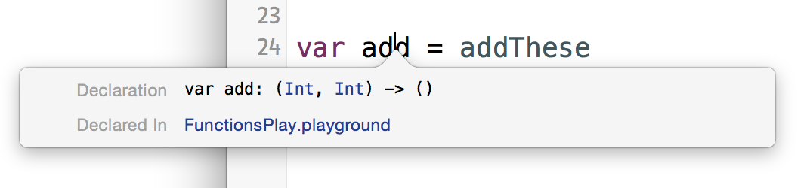
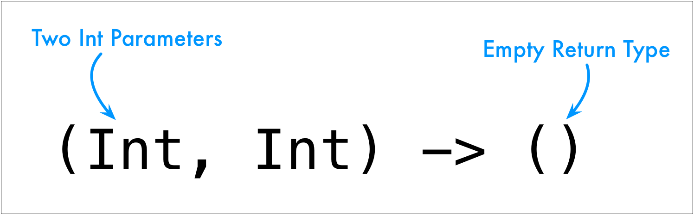

Option-click on the variable and we can see the type.

The type is (Int, Int) -> ()

Does this mean we can declare variables and constants to have a type that's a function?
Yup.
1 2 3 4 5 | var add2: (Int, Int) -> ()
add2 = addThese
add2(25, 25)
|